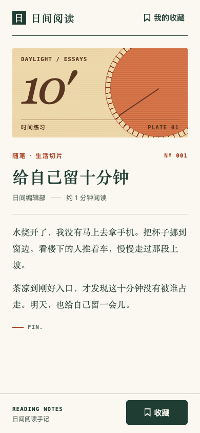
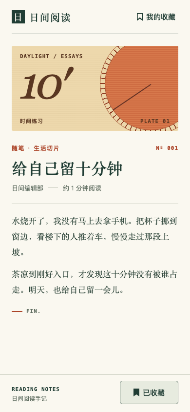
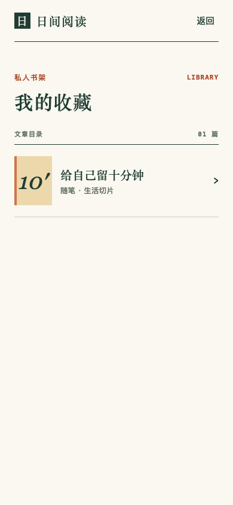
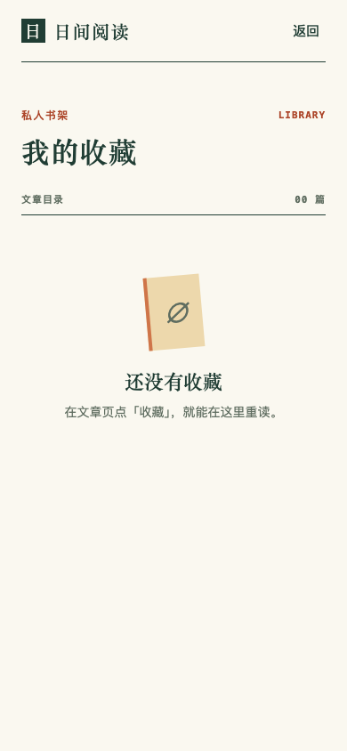

候选构建复核通过
在指定手机视口下，四个状态均与设计稿一致，未发现文案、按钮热区或状态偏差。收藏与取消都在关闭页签后保留。
打开候选构建 · 打开设计基准 · 业务状态规则四态对照
表中为设计与构建共同的实测结果。尺寸是可点击按钮的宽 × 高（CSS px），不是图标大小。所有可见按钮均达到设计稿的 44 × 44 下限，中心及上下左右四个近边点都命中按钮或其子元素。
| 状态 | 页面所见 | 按钮热区 |
|---|---|---|
| 未收藏详情 | 《给自己留十分钟》；「收藏」未按下 | 我的收藏 91 × 44；收藏 120 × 48 |
| 已收藏详情 | 同篇文章；「已收藏」呈按下态 | 我的收藏 91 × 44；已收藏 120 × 48 |
| 列表一条 | 「01 篇」，仅《给自己留十分钟》，不显示空态 | 返回 44 × 44；整行 342 × 121 |
| 空态 | 「00 篇」「还没有收藏」及「在文章页点『收藏』，就能在这里重读。」（按钮名在页面中用「」标注）；无文章行 | 仅返回 44 × 44 |
逐态展开可看同尺度截图：左为设计，右为构建。连续两帧稳定后比较全视口 RGBA，未遮罩、未缩放、无容差；四组分别为 0 / 329,160 像素不同。
01 未收藏详情


02 已收藏详情


03 列表一条


04 空态


关掉页签，下次打开还能找到吗？
两次均关闭构建上下文中的唯一页签，确认页签数为零，再在同一浏览器上下文中新建页签，打开无参数的 build-v2.html。未刷新、未恢复旧页签，也未向存储写入测试值。
- 收藏保留，通过。在详情点「收藏」，看到「已收藏」后关页。重开的详情仍显示「已收藏」，进入「我的收藏」显示 01 篇及目标文章。
- 取消保留，通过。从列表点「返回」，在详情点「已收藏」取消，见「收藏」后关页。重开的详情显示「收藏」，进入列表显示 00 篇及空态，文章未恢复。


交付入口与复核范围
可点原型实际打开，首屏可见文章标题和「收藏」。三步演示实际打开并逐步点选，内嵌线框依次显示「已收藏」、目标文章、以及「还没有收藏」。这是模拟分镜，不作为构建持久化证据。
环境：macOS，隔离 Chrome 158.0.8127.36，Playwright Core，390 × 844、DPR 1、移动触摸模拟、浅色、zh-CN。本地 HTML 同址重开；设计稿在独立上下文按状态参数打开。结论不覆盖真机、账号同步或浏览器进程重启，不代替设计师签收。
原始记录：时间、文件 SHA-256、逐态文案、按钮坐标及关页前后观测